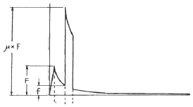
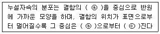
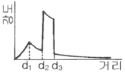
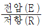

자기비파괴검사기사 (2016-03-06 기출문제)
1과목: 비파괴검사 개론
1. 다음 중 모세관속에 있는 액체의 높이와 관련이 먼 것은?
- 밀도
- 표면장력
- 점성
- 접촉각
(정답률: 37%)

2. 방사선투과시험과 비교한 초음파탐상시험의 장점과 거리가 먼 것은?
- 시험체 두께에 대한 영향이 적다.
- 미세한 균열성 결함의 검사에 유리하다.
- 결함의 형태와 종류를 쉽게 알 수 있다.
- 한쪽 면에서만 접근할 수 있어도 탐상이 가능하다.
(정답률: 70%)
3. 누설 시험에서 온도를 측정하는 온도계 중 비접촉식 온도계로 옳은 것은?
- 유리 온도계
- 방사 온도계
- 저항 온도계
- 열전대 온도계
(정답률: 61%)
4. 다음 비파괴검사 중 방사선투과검사와 가장 관계가 먼 것은?
- X선 투과검사
- γ선 투과검사
- 중성자 투과검사
- X선 회절 분석
(정답률: 69%)
5. 다음 중 레이져(laser)과 관계가 없는 비파괴검사법은?
- 광 홀로그램(Optical holography)
- 광탄성 피막 검사(Photoelastic coating test)
- 모아레 검사(Moirt test)
- 보아스코프 검사(Borescope test)
(정답률: 82%)
6. 다음 합금 원소 중에서 강의 경화능을 가장 많이 향상시키는 원소는?
- B
- Mo
- Cr
- Cu
(정답률: 52%)
7. 비강도가 크며, 항공우주용 재료에 사용되며, 비중이 Al의 약 2/3 정도 되는 금속은?
- Cd
- Cu
- Mg
- Zn
(정답률: 83%)
8. 고융점 금속에 관한 설명으로 틀린 것은?
- 증기압이 낮다
- Mo는 체심입방격자를 갖는다.
- 융점이 높으므로 고온강도가 크다.
- W, Mo는 열팽창계수가 높고, 탄성률이 낮다
(정답률: 55%)
9. 조직이 (α+β)로서 상온에서의 전연성은 낮으나 강도가 높아 기계부품 등으로 사용되는 황동은?
- 60%Cu-40%Zn
- 70%Cu-30%Zn
- 80%Cu-20%Zn
- 95%Cu-5%Zn
(정답률: 75%)
10. 순철의 자기변태와 동소변태를 설명한 것 중 옳은 것은?
- 자기변태는 결정격자가 변하는 변태이다.
- 동소변태란 결정격자가 변하지 않는 변태를 말한다.
- 동소변태점은 A1점이고, 자기변태 점은 923℃이다.
- 동소변태점은 A3점과 A4점이고, 자기변태점은 768℃이다.
(정답률: 58%)
11. 은백색의 금속으로 비중이 약 1.85 이며, 중성자를 잘 통과 시키므로 원자로 연료의 피복제, 중성자의 반사재나 원자핵분열기에 사용되는 금속은?
- Ge
- Be
- Si
- Te
(정답률: 50%)
12. 재료의 연성을 알기 위한 것으로 구리판, 알루미늄판 등의 판재를 가압성형하여 변형 능력을 시험하는 것은?
- 마모시험
- 에릭센시험
- 크리프시험
- 스프링시험
(정답률: 77%)
13. Cu-Pd 계로 고속, 고하중에 적합한 베어링용 합금의 명칭은?
- 켈멜(Kelmet)
- 크로멜(Chromel)
- 슈퍼인바(Superinvar)
- 백 메탈(Back metal)
(정답률: 78%)
14. 가단주철의 특징으로 옳은 것은?
- 담금질 경화성이 없다.
- 경도는 Si량이 많을수록 낮다.
- 충격성은 높으나, 절삭성이 나쁘다.
- 백주철의 시멘타이트로부터 흑연을 생성한다.
(정답률: 46%)
15. Fe-C 평형상태도에서 가장 높은 온도에서 일어나는 변태는?
- 공석변태
- 공정변태
- 포정변태
- 포석변태
(정답률: 74%)
16. 전류가 높고 아크 길이가 특히 긴 경우에 발생하며, 용접금속 비산에 의한 용접봉의 손실을 초래하는 결함은?
- 기공
- 오버 랩
- 용입 불량
- 스패터
(정답률: 53%)
17. 이산화탄소 아크용접에서 기공의 발생 원인이 아닌 것은?
- 이산화탄소 가스 유량이 부족하다.
- 노즐에 스패터가 많이 부착되어 있다.
- 공기가 침입해 들어간다.
- 이산화탄소 가스 순도가 매우 높다.
(정답률: 67%)
18. 연강용 피복아크 용접봉 심선의 재료로 사용되는 것은?
- 고장력강(high strength steel)
- 저탄소림드강(low carbon rimmed steel)
- 가단주철(malleable cast iron)
- 주강(cast steel)
(정답률: 65%)
19. 불활성 가스 금속 아크 용접의 장점으로 틀린 것은?
- 수동 피복 아크 용접에 비해 용착효율이 높다.
- 불활성 가스 텅스텐 아크 용접에 비해 전류밀도가 높다.
- 탄산가스 아크 용접에 비해 스패터 발생이 적다.
- 불활성 가스 텅스텐 아크 용접에 비해 얇은판 용접에 적합하다.
(정답률: 72%)
20. 다음 용접 결함 중 구조상의 결함이 아닌 것은?
- 기공
- 융합 불량
- 언더컷
- 연성 부족
(정답률: 67%)
2과목: 자기탐상검사 원리
21. 교류전류를 사용할 경우 표면에서 자속밀도가 최대가 되는 것을 표피효과라 한다. 이에 대한 설명 중 잘못 된 것은?
- 자속 밀도가 표면의 약 37%가 되는 깊이를 표피두께라 한다.
- 표피두께는 교류 주파수가 클수록 작아진다.
- 표피두께는 투자율이 클수록 작아진다.
- 표피두께는 전도율이 클수록 커진다.
(정답률: 40%)
22. 그림에 나타낸 자장 분포곡석은 다음 중 어느 경우인가?

- 속이 찬 자성체에 직류가 흐를 때
- 속이 빈 자성체에 중심도체를 사용하고 교류가 흐를 때
- 속이 빈 자성체에 중심도체를 사용하고 직류가 흐를 때
- 속이 빈 비자성체에 직류가 흐를 때
(정답률: 55%)
23. 자화전류 선택에 관한 사항으로 틀린 것은?
- 표면 직하의 결함을 검출하고자 할 때는 직류가 좋다.
- 연속법에는 충격 전류를 사용하지 않는다.
- 잔류법에는 맥류를 사용하지 않는다.
- 반자계의 영향을 적게하고자 할 때는 교류가 좋다.
(정답률: 40%)
24. 자극의 단면이 25mm × 25mm 인 극간식 자분탐상장치의 전자속을 측정하였더니 0.625mWb 이었다. 자속 밀도는 몇 Tesla가 되는가?
- 1
- 2
- 4
- 10
(정답률: 57%)
25. 자분탐상검사에서 건식자분 적용방법에 관한 사항으로 틀린 것은?
- 시험면이 건조된 상태이어야 한다.
- 산포기로 자분을 공기 중에 분산시켜 시험체에 살살 뿌린다.
- 침지법은 천천히 교반 유동시킨 건식자분에 침지해야한다.
- 과잉자분 제거는 건조한 공기로 가볍게 시험면에 뿌린다.
(정답률: 86%)
26. 직선 도체에 전류가 흐르고 있을 때 이 직선 전류의 주위에는 자장이 발생한다. 이 때 자장의 세기를 설명한 것 중 틀린 것은?
- 전류에 비례한다.
- 도체 중심에서부터의 반경에 반비례한다.
- 도체의 축을 중심으로하는 동심원상에서는 동일하다.
- 자계의 방향은 앙페르의 왼손 나사 법칙에 따른다.
(정답률: 85%)
27. 시험체의 전처리 방법을 선정할 때에 고려할 사항으로 가장 거리가 먼 것은?
- 제거될 오염물의 종류
- 시험체의 성분, 경도
- 검사에 요구되는 청정도
- 자계의 분포에 영향을 주는 정도
(정답률: 42%)
28. 건식자분을 사용하는 부품에서 자분을 적용하는 방법으로 다음 중 적절한 것은?
- 공기 중에 분산시켜 탐상표면에 뿌리는 방법을 사용
- 현탄액을 뿌린 후 탐상표면에 뿌리는 방법을 사용
- 부품을 자분 속에 넣은 후 신속히 꺼내는 방법으로 적용
- 압축 공기로 탐상표면에 강하게 뿌려 적용
(정답률: 75%)
29. 상자성체의 자화율이 절대온도에 반비례한다는 법칙은?
- Lenz의 법칙
- Curie 법칙
- Hund의 법칙
- Maxwell의 법칙
(정답률: 62%)
30. 자장의 세기를 나타내는 단위는?
- Weber/m3
- Amp/m
- Weber/m2
- Henry/m
(정답률: 50%)
31. 다음 중 전류관통법을 설명한 것으로 틀린 것은?
- 전기적 접촉이 필요 없고, 아크 발생가능성이 없다.
- 도체를 내면에 가까이 하여도 유효자계의 변화는 없다.
- 지름이 큰 부품은 자화과정 중 부품의 회전과 내면에 대하여 반복적인 자화가 필요하다.
- 원통 시험체의 바깥 원주면을 검사할 때는 외경에 비례하는 크기의 충분한 전류치가 필요하다.
(정답률: 66%)
32. 직각통전법으로 긴봉의 시험체 전체 길이를 시험할 경우, 1회의 통전(자화)으로 전체를 시험할 수 없다면 어떻게 해야 하는가?
- 시험체의 굵기 이하의 등간격으로 나누어 여러 번 통전하여 시험한다.
- 시험체의 굵기와 관계없이 전극크기에 맞추어 나누어 여러 번 통전하여 시험한다.
- 전극크기에 비례하되 전극보다는 적게 나누어 여러 번 통전하여 시험한다.
- 시험체의 굵기와 전극크기에 따라 등간격으로 나누어 여러 번 통전하여 시험한다.
(정답률: 39%)
33. 자분탐상시험시 시험체의 탈자에 대한 검사원의 자세는?
- 모든 대형 시험체는 Loop 방법을 이용한다.
- 관련 원리와 요구되는 탈자의 정도를 잘 알아둔다.
- 재료의 특성과 무관하게 모든 시험체는 탈자한다.
- 항상 시험체를 망치로 두드린 후 표지를 부착한다.
(정답률: 92%)
34. 교류 극간식 자분탐상 시험장치의 자화 능력이나 경년 변화를 조사하기 위해 전자속을 측정하는 기구는?
- 분류기, Hall 소자
- 교류 자속계, Searching coil
- 분류기, Solenoid coil
- 교류 전압계, 변류기
(정답률: 60%)
35. 다음 중 자분탐상검사 후 탈자의 효과가 가장 우수한 경우는?
- 극성을 바꾸면서 전압이 단계적으로 감압될 수 있는 직류장치
- 극성을 바꾸면서 전압이 단계적으로 감압될 수 있는 교류장치
- 극성은 한 방향으로만 흐르며 전압이 급격히 감압될 수 있는 직류장치
- 극성은 한 방향으로만 흐르며 전압이 급격히 감압될 수 있는 교류장치
(정답률: 64%)
36. 큰 쪽 직경이 90mm이고 작은 쪽 직경이 45mm인 균질의 원뿔형 강자성 환봉에서 직경이 작은 쪽 끝에 2 테슬라의 자속이 들어가면 직경이 큰 쪽 끝에서의 자속은?
- 0.5 Tesla
- 1 Tesla
- 2 Tesla
- 4 Tesla
(정답률: 35%)
37. 다음은 관찰과정에서 나타난 자분모양에 대한 설명이다. “자분모양이 선명하고 뚜렷한 형상을 하지 않고, 흐리며 넓게 퍼진 형상으로 나타났다” 무엇에 대한 설명일까?
- 자기 펜 자국
- 언더컷 지시
- 표면 근처의 결함
- 라미네이션 지시
(정답률: 37%)
38. 소형의 부품 등 여러 개의 시험체를 동시에 자분탐상검사할 때, 반드시 고려하여야 할 사항으로 짝지어진 것은?
- 시험체의 배치 - 자화방법 - 자화전류
- 시험면의 상태 - 자화전류 - 자분모양의 관찰
- 시험면의 상태 - 자화방법 - 자화전류
- 시험체의 배치 - 자화방법 - 자분모양의 관찰
(정답률: 58%)
39. 다음 ( ) 안에 들어갈 적당한 내용은?

- ⓐ 아래쪽 ⓑ 표면 ⓒ 가까워
- ⓐ 아래쪽 ⓑ 결함 ⓒ 멀어
- ⓐ 위쪽 ⓑ 표면 ⓒ 멀어
- ⓐ 위쪽 ⓑ 결함 ⓒ 가까워
(정답률: 75%)
40. 프로드법으로 탐상시험하는 경우 접촉부위에 소손을 방지하기 위하여 실시하는 조치로 다음 중 옳은 것은?
- 전극에 얇은 납판을 부착한다.
- 전극에 얇은 유리 판재을 부착한다.
- 전극에 얇은 함석판을 부착한다.
- 전극에 얇은 플라스틱판을 부착한다.
(정답률: 75%)
3과목: 자기탐상검사 시험
41. 습식자분의 성능점검 방법으로 맞는 것은?
- 거치식 장치의 자분은 주 1회 이상 점검
- 검사절차서에 표기된 시험편으로 점검
- 농도의 확인은 자분액을 가열 및 증발시키고 잔류물 계량
- 물을 사용하는 경우는 방청제만 첨가
(정답률: 85%)
42. 그림은 어떤 부품의 자분탐상시험시 자장의 분포를 나타 낸 것이다. 어떤 부품의 형태로 판단되는가?

- 봉재
- 원통재
- 판재
- 두꺼운 판재
(정답률: 67%)
43. 자분탐상검사 중 전처리에 대한 설명 중 틀린 것은?
- 전처리의 범위는 시험부위보다 넓게 한다.
- 시험품은 조립된 상태에서 검사하는 것이 효과적이다.
- 녹 등의 오염물은 쇠솔질이나 블라스팅으로 전처리한다.
- 기름류는 증기탈지, 세제 등으로 제거한다.
(정답률: 91%)
44. 자분탐상시험 결과 시험물의 모서리 부분에 자분이 너무 많이 달라붙어 결함 유무의 판독이 어렵다. 이 때 올바른 조치 사항은?
- 탈자시킨 후에 시험 전류를 감소시켜 다시 검사한다.
- 탈자시킨 후에 시험 전류를 증가시켜 다시 검사한다.
- 탈자시킨 후에 교류로 다시 검사한다.
- 탈자시킨 후에 직류로 다시 검사한다.
(정답률: 62%)
45. 코일법에 의한 자분탐상시검사법을 설명한 것으로 틀린 것은?
- 코일의 축에 직각인 원주 방향의 결함이 잘 검출된다.
- 자계강도는 코일에 흐르는 전류와 코일 감은수의 곱에 비례한다.
- 코일에 전류를 통할 때 발생하는 코일의 축방향의 자계를 이용한다.
- 코일 내벽의 자계강도가 가장 약하고 코일 중심에 가까울수록 강해진다.
(정답률: 45%)
46. 전류관통법의 특징을 설명한 것으로 틀린 것은?
- 시험체의 내부표면에 가장 높은 자계가 분포된다.
- 원형자계의 형성으로 축방향에 평행으로 존재하는 결함이 잘 검출된다.
- 전류관통용 구리봉과 시험체의 접촉부분은 스파크 발생의 위험이 있다.
- 베어링, 너트와 같은 구멍이 있는 시험체는 많은 양을 한 번에 검사할 수 있다.
(정답률: 48%)
47. 자분탐상검사에서 표준시험편의 사용에 대한 설명이 아닌 것은?
- 통전방법과 통전시간의 설정
- 검사체면의 유료자계 범위의 확인
- 의자자분모양과 대조 확인이 필요할 때
- 검사액의 농도, 자성의 저하 및 조작의 적부조사
(정답률: 37%)
48. 코일로 선형자화를 할 때 암페어의 실효치를 정하는 방법은?
- Ampere-Turns(A-T)
- 코일의 감은 수를 시험품의 폭으로 곱
- 암페어 Meter가 가리키는 암페어 수
- 전류(I)=

로서 [A]
(정답률: 63%)
49. 시험체 표면에 있는 결함 검출에 가장 적합한 자화전류와 자분의 조합은?
- 직류-건식자분
- 교류-습식자분
- 직류-습식자분
- 교류-건식자분
(정답률: 66%)
50. 1차적으로 부품에 매우 높은 자화력을 적용한 다음, 초기 자화의 세기를 줄여 놓고 자분의적용 시간동안 계속하여 일정한 자화력을 유지하는 자분탐상시험은?
- 잔류법
- 다중백터법
- 연속법
- 충격법
(정답률: 63%)
51. 형광 자분탐상검사에서 자분지시 모양의 관찰에 대한 설명으로 틀린 것은?
- 자분지시 모양을 충분히 식별할 수 있는 어두운 장소에서 관찰한다.
- 자외선 조사장치의 자외선 파장이 200~250mm 이어야 하며, 관찰면에서의 강도가 800μW/cm2이상의 성능을 갖는 것을 사용한다.
- 백색등을 준비하여 필요에 따라서 관찰면의 표면상태와 자분지시 모양을 비교하면서 관찰한다.
- 관찰대상이 넓은 경우 사전에 관찰순서를 정하고 관찰에 누락이 생기지 않도록 주의한다.
(정답률: 82%)
52. 길이가 6인치이고 직경이 2인치인 환봉 제품을 코일법으로 자분탐상시험을 하기 위하여 시험체에 코일을 5번 감은 경우 몇 암페어의 전류를 사용해야 하는가?
- 1500 A
- 2000 A
- 3000 A
- 4000 A
(정답률: 69%)
53. 자분탐상검사 시 시험체 전면에 자분모양이 나타났을 때의 1차적인 조치로 가장 옳은 것은?
- 시험체를 폐기한다.
- 반대 방향으로 재검사한다.
- 전류량을 낮춰서 재검사한다.
- 전류량을 높여서 재검사한다.
(정답률: 45%)
54. 유도전류법(Induced current method)에 대한 설명으로 틀린 것은?
- 자동장비에 사용이 가능하다.
- 시험체에 직접적인 전류의 접촉이 불필요하다.
- L/D 비율이 작아 코일법 적용이 불가능한 시험체에 가능하다.
- 크기가 작은 구형 시험체는 연속법으로 검사가 가능하다.
(정답률: 38%)
55. 자분탐상시험결과 결함 판정이 곤란할 경우 취할 조치로 틀린 것은?
- 자기펜 흔적은 탈자후 재시험을 실시하면 없어진다.
- 시험편이 거칠어서 발생하는 자분모양은 시험면을 매끄럽게 해서, 재시험을 하면 자분모양이 없어진다.
- 투자율 급변부의 자분모양은 다시 탈자후 재시험을 하면 자분모양이 없어진다.
- 강전류에 의한 자분 응집 모양은 전류를 작게 하든가 잔류법으로 재시험하면 자분모양은 없어진다.
(정답률: 56%)
56. 단조 제품의 자분탐상시험에서 가장 많이 발견될 것으로 예상되는 불연속은?
- 랩(Lap)
- 핫 티어(Hot trar)
- 라미네이션(Lamination)
- 슬래그개입(Slag Inclusion)
(정답률: 50%)
57. 자분탐상검사에 사용하는 자화방법 중 시험체에 직접 통전하는 방식으로만 나열된 것은?
- 축통전법, 전류관통법
- 프로드법, 극간법
- 극간법, 전류관통법
- 프로드법, 축통전법
(정답률: 53%)
58. 다음 중 자기펜 흔적의 의사모양 발생에 대하여 잘못 설명한 것은?
- 잔류법을 적용할 때 시험체끼리 접촉되지 않도록 주의하여야 한다.
- 일반적으로 희미하고 굵은 모양의 지시를 나타낸다.
- 탈자 후 재자화시키면 없어진다.
- 예리한 것으로 접촉되면 자분모양이 뚜렷한 선모양으로 나타나 결함으로 잘못 판독하기 쉽다.
(정답률: 58%)
59. 자분탐상검사에서 시험체 종류에 따른 일반적인 자화방법의 적용이 가장 옳게 연결된 것은?
- 대형 밸브류 - 프로드법
- 저장탱크의 용접부 - 코일법
- 차량의 차축 - 전류관통법
- 소형 베어링 - 프로드법
(정답률: 67%)
60. 자분이 구비하여야 할 일반적 조건으로 틀린 것은?
- 정교하고 미세한 분말이어야 한다.
- 높은 투자율을 가져야 한다.
- 높은 보자성을 가져야 한다.
- 흡착 성능이 좋아야 한다.
(정답률: 66%)
4과목: 자기탐상검사 규격
61. 배관 용접부의 비파괴시험 방법(KS B 0888)에 따라 자기탐상시험 결과 나타난 분산자분모양 지시는 연속된 용접길이 300mm당 합계점이 얼마 이하여야 합격으로 판정하는가?
- 5점
- 8점
- 10점
- 12점
(정답률: 62%)
62. 철강 재료의 자분탐상 시험방법 및 자분모양의 분류(KS D 0213)에서 시험결과 확인된 자분모양의 흠에 의한 것으로 판정하기 어려울 때는 일반적으로 어떻게 하는가?
- 결함으로 판정한다.
- 현미경이나 확대경으로 관찰하여 확인 판정한다.
- 탈자를 하고 표면상태를 개선하여 재시험한다.
- 강자성체를 시험면에 접촉시켜 자기흔적 여부를 확인한다.
(정답률: 74%)
63. 보일러 및 압력용기에 대한 자분탐상검사의 합격기준(ASME Sec.Ⅷ, Div.1 App.6)에 따라 검출된 자분지시의 평가가 옳은 것은?
- 크기가 1mm인 원형지시 4개가 1mm 간격으로 거의 일직 선상에서 검출되어 선형지시로 평가하였다.
- 크기가 2mm 인 원형지시 3개가 1mm 간격으로 거의 일직 선상에서 검출되어 불합격으로 평가하였다.
- 크기가 2mm 인 선형지시가 독립적으로 검출되어 불합격으로 평가하였다.
- 크기가 1mm 인 원형지시와 2mm인 원형지시가 1mm 간격으로 검출되어 불합격으로 평가하였다.
(정답률: 31%)
64. 철강 재료의 자분탐상 시험방법 및 자분모양의 분류(KS D 0213)에서 표준시험편의 표시가 A1-15/100으로 되어 있다면 시험편의 크기, 인공흠의 깊이, 판의 두께로서 맞는 것은?
- 10×10mm, 0.15mm, 1mm
- 10×10mm, 15μm, 100μm
- 20×20mm, 15μm, 100μm
- 20×20mm, 0.15mm, 1mm
(정답률: 37%)
65. 배관 용접부의 비파괴시험 방법(KS B 0888)에 따라 배관 용접부를 자분탐상시험한 경우 검출된 독립자분모양 및 연속자분모양은 한 개의 길이가 몇 mm 이하인 경우 합격으로 판정하는가?
- 4
- 6
- 8
- 10
(정답률: 20%)
66. 철강 재료의 자분탐상 시험방법 및 자분모양의 분류(KS D 0213)에서 통전시간의 설정에 대한 설명 중 옳은 것은?
- 연속법에 있어서 통전시간은 1/4~1초로 한다.
- 잔류법에 있어서 통전시간은 3초 이상으로로 한다.
- 교류 연속법의 경우 통전 회수는 3회 이상으로 한다.
- 충격전류의 경우 통전시간은 1/120초 이상으로 한다.
(정답률: 55%)
67. 보일러 및 압력용기에 대한 자분탐상검사의 합격기준(ASME Sec.V Art.7)에 따른 자화 장치의 교정주기와 장치 계기의 허용오차 범위를 옳게 나타낸 것은?
- 교정주기 : 2년, 허용 오차 : ±10%
- 교정주기 : 1년, 허용 오차 : ±10%
- 교정주기 : 1년, 허용 오차 : ±15%
- 교정주기 : 2년, 허용 오차 : ±15%
(정답률: 74%)
68. 철강 재료의 자분탐상 시험방법 및 자분모양의 분류(KS D 0213)에 따라 코일법으로 자분탐상 시험시 시험편을 분할하여 검사할 때의 설명으로 틀린 것은?
- 시험체가 너무 길은 경우 분할하여 검사한다.
- 분할한 시험면의 경계부는 이웃끼리의 유료자계가 겹쳐지도록 한다.
- 전류치는 전체 전류치를 분할 회수로 나눈 값으로 한다.
- 시험체의 단면이 크게 급변하는 경우 분할하여 검사한다.
(정답률: 48%)
69. 보일러 및 압력용기에 대한 자분탐상검사의 합격기준(ASME Sec.V Art.25 SE-709)에 의거 습식자분의 품질관리시험 중 비형광자분 현탄액의 농도를 측정하는 경우, 자분의 제조사가 달리 규정하지 않는 한 현탄액 100mL 중 비형광자분의 적정 침전용량은 얼마로 규정하고 있는가?
- 0.1~0.5mL
- 0.5~1.0mL
- 1.2~2.4mL
- 3.0~3.5mL
(정답률: 53%)
70. 철강 재료의 자분탐상 시험방법 및 자분모양의 분류(KS D 0213)에 규정한 표준 및 대비 시험편의 설명 중 틀린 내용은?
- A형 표준 시험편 : 자분의 적용은 연속법으로 한다.
- B형 대비 시험편 : 강용접부의 그루브면과 같은 좁은 부분에 주로 사용한다.
- C형 표준 시험편 : A형 표준시험편의 적용이 곤란한 경우 대신 사용한다.
- A형 표준 시험편 : A2는 A1보다 높은 유효자계의 강도에서 자분모양이 나타난다.
(정답률: 70%)
71. 보일러 및 압력용기에 대한 자분탐상검사의 합격기준(ASME Sec.Ⅷ Div.1 App.6)에 따른 지시의 평가 및 분류에 관한 설명으로 틀린 것은?
- 지시의 길이가 폭의 3배를 초과한 지시는 선형지시로 분류하여 평가한다.
- 지시의 길이가 폭의 3배 이하인 지시는 원형 지시로 분류하여 평가한다.
- 균열로 식별된 자분지시는 별도로 분류하여 평가한다.
- 평가대상(관련지시)인 선형지시는 무조건 불합격으로 평가한다.
(정답률: 39%)
72. 철강 재료의 자분탐상 시험방법 및 자분모양의 분류(KS D 0213)에서 길이가 3cm, 폭이 1cm인 독립한 자분모양이 있다면 분류상 어떠한 자분모양으로 분류되는가?
- 선상의 자분모양
- 원형상의 자분모양
- 분산한 자분모양
- 연속한 자분모양
(정답률: 70%)
73. 보일러 및 압력용기에 대한 자분탐상검사의 합격기준(ASME Sec.V Art.25 SE-709)에 따른 유도전류장치의 링형 부품 원주형 불연속부의 시험과 관련한 장점이 아닌 것은?
- 자동화가 가능하다.
- 전기적인 접촉이 없다.
- 지름이 큰 부품의 시험체도 쉽게 가능하다.
- 1회의 자화로 전 표면의 시험이 가능하다.
(정답률: 37%)
74. 철강 재료의 자분탐상 시험방법 및 자분모양의 분류(KS D 0213)에서 규정한 자분모양의 분류에 해당하지 않는 것은?
- 균열에 의한 자분모양
- 원형상의 자분모양
- 분산한 자분모양
- 불연속한 자분모양
(정답률: 72%)
75. 보일러 및 압력용기에 대한 자분탐상검사의 합격기준(ASME Sec.V Art.25 SE-709)에 따른 자기탐상시험에서 용접부의 열처리 등의 지정이 있을 때, 합격여부 판정을 위한 자기탐상시험 시기는?
- 용접완료 후에 시험한다.
- 용접완료 후 24시간이 경과한 후에 시험한다.
- 열처리 완료 후에 시험한다.
- 열처리 전 및 후에 시험한다.
(정답률: 53%)
76. 보일러 및 압력용기에 대한 자분탐상검사의 합격기준(ASME Sec.V Art.7)에서 선형자화법으로 5000 암페어ㆍ턴이 요구 되었다면 10회 감긴 코일에 몇 A를 사용하여야 하는가?
- 200
- 500
- 100
- 50
(정답률: 67%)
77. 보일러 및 압력용기에 대한 자분탐상검사의 합격기준(ASME Sec.V Art.25 SE-709)에 따라 축통전법이나 전류관통법을 사용하여 자화하는 경우, 유도자화로 생성된 자장의 측정 및 잔류자장 검출에 효과적으로 사용되는 것은?
- A형 표준시험편
- 슬롯심(slotted shim) 시험편
- 홀 효과 프로브(Hall effect probe)
- 파이 자장지시계(Pie field indicator)
(정답률: 54%)
78. 보일러 및 압력용기에 대한 자분탐상검사의 합격기준(ASME Sec.V Art.25 SE-709)에 의한 습식자분 현탄액의 점도는 액조가 사용되는 임의의 온도에서 몇 mm2/s를 초과하지 않도록 규정하고 있는가? (단, 검사는 ASTM 규정에 따라 실시한다.)
- 3
- 5
- 10
- 15
(정답률: 56%)
79. 철강 재료의 자분탐상 시험방법 및 자분모양의 분류(KS D 0213)에서 자화방법의 부호 중 “B"가 의미하는 것은?
- 극간법
- 코일법
- 축통전법
- 전류관통법
(정답률: 58%)
80. 보일러 및 압력용기에 대한 자분탐상검사의 합격기준(ASME Sec.V Art.25 SE-709)에 따르면 전류관통법에서 자장의 세기는 관통시킨 도체의 턴수 증가시 자장의 세기는?
- 비례하여 증가한다.
- 반비례하여 감소한다.
- 무관하다.
- 제곱에 반비례하여 감소한다.
(정답률: 67%)